Campus Go v0.12｜P0場景向量示意
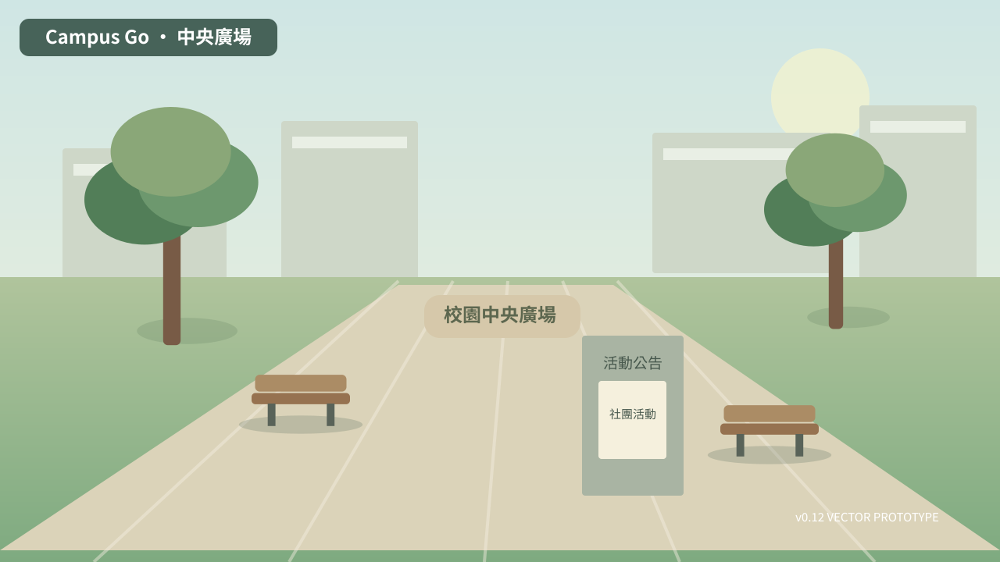
中央廣場plaza · 公共樞紐
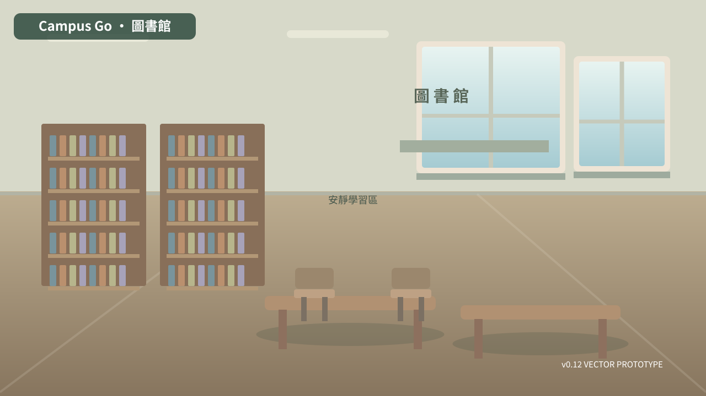
圖書館library · 共學與閱覽
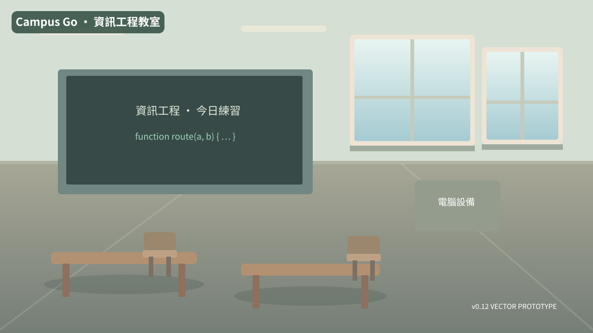
資訊工程教室cs · 課程與合作
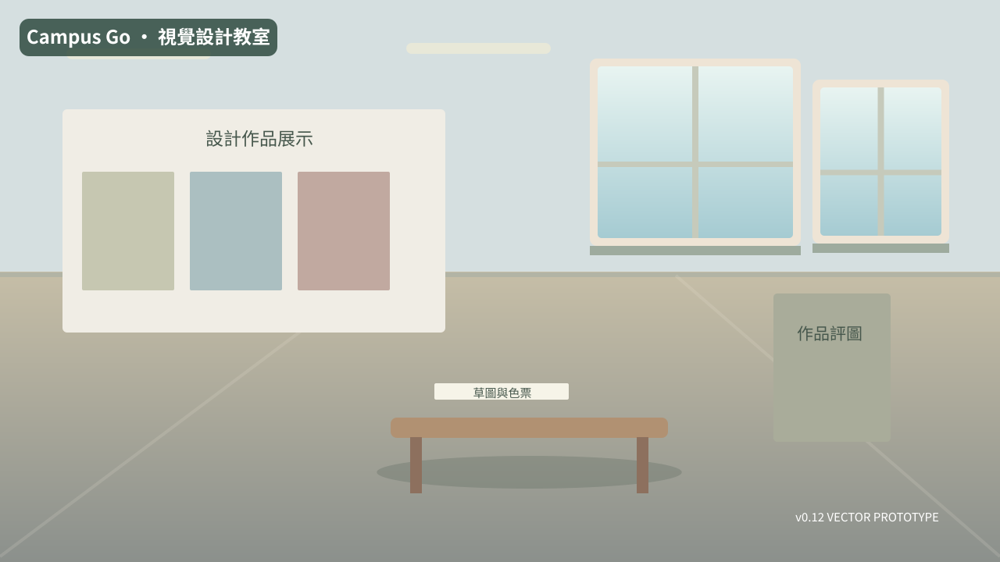
視覺設計教室design · 專業工作台
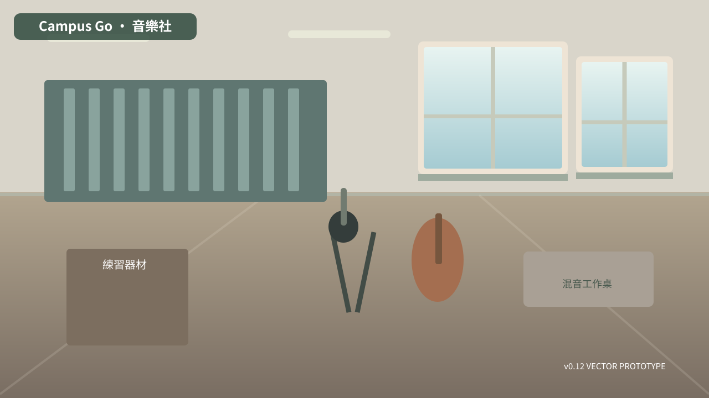
音樂社music · 社團排練
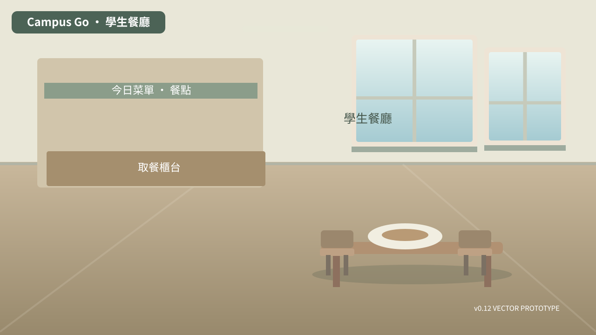
學生餐廳canteen · 日常共餐
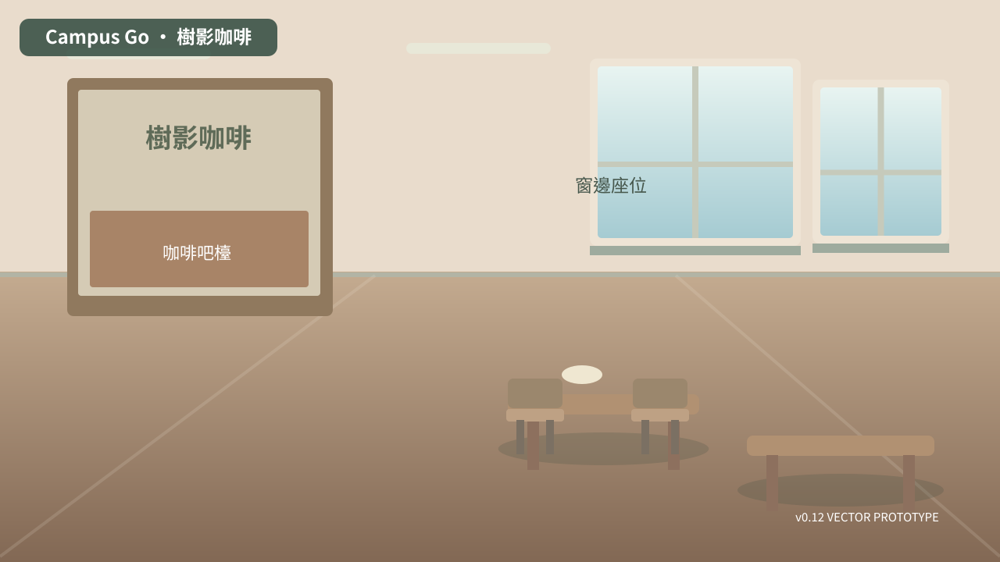
樹影咖啡cafe · 課餘交流
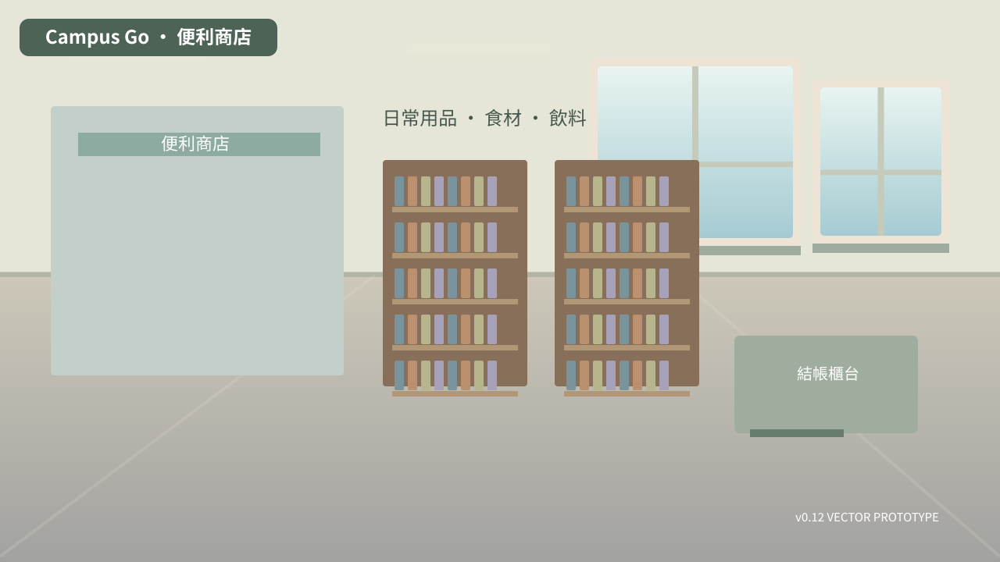
便利商店shop · 補給與購物
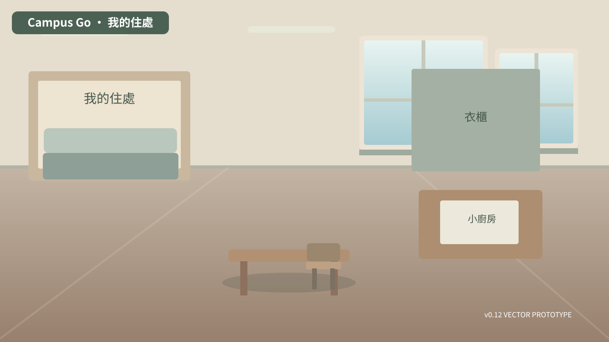
我的住處home · 居家生活
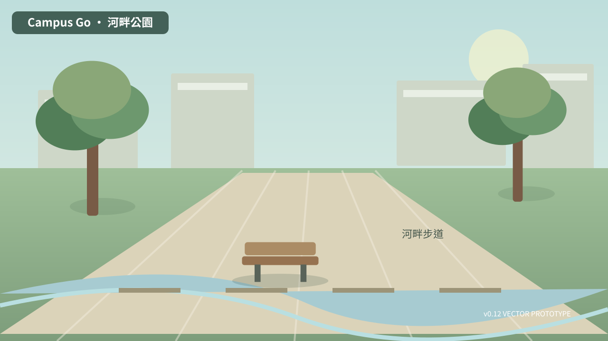
河畔公園park · 散步與戶外
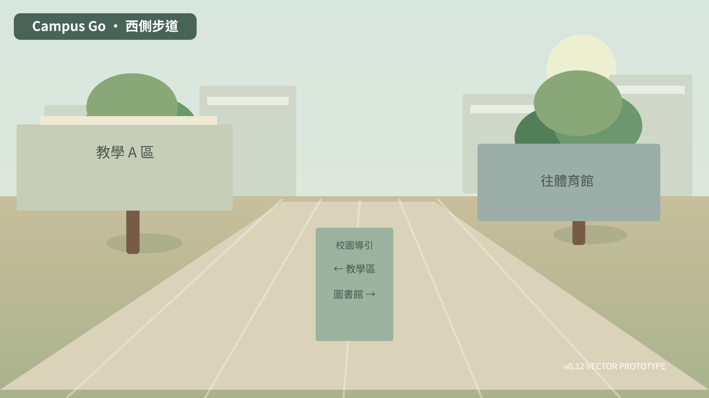
西側步道west · 教學A／圖書館
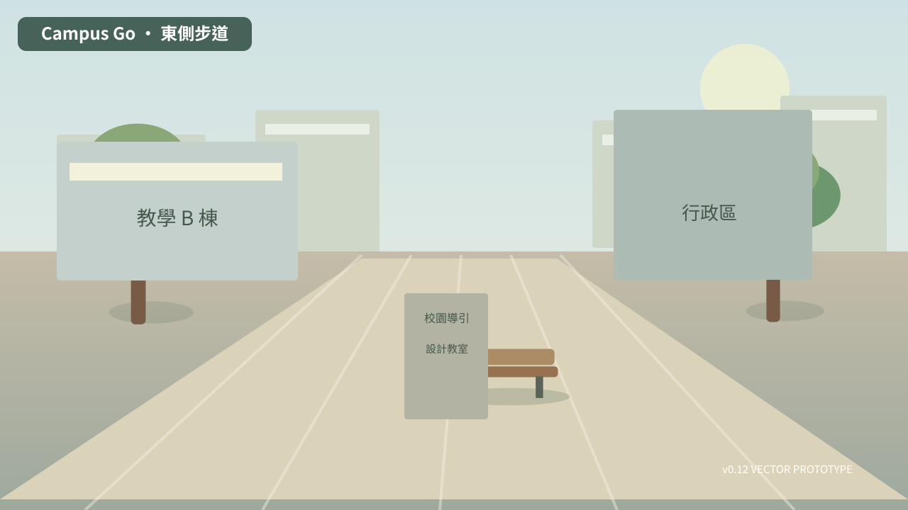
東側步道east · 教學B／行政